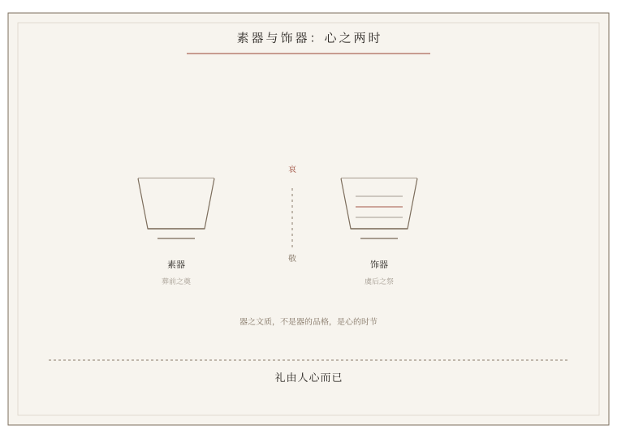

檀弓下 · 四·十九 · 第 344 课
奠以素器，以生者有哀素之心也。唯祭祀之礼，主人自尽焉尔，岂知神之所飨？亦以主人有齐敬之心也。
说什么事：始死至葬的奠，用不加雕饰的素器，因为生者这时有一颗「哀素」的心。至于祭祀之礼，主人尽其心而已，岂是为了让神吃饱？也因为主人有一颗斋敬的心。
落在哪一层：以「器」量心。论「素」与「饰」各属哪个时节。
为何编在此位：三百四十三课论「识」，此课论「器」。名以识人，器以表心。
【经】奠以素器，以生者有哀素之心也。唯祭祀之禮，主人自盡焉爾，豈知神之所饗？亦以主人有齊敬之心也。
【注】哀素，言哀痛无饰也。凡物无饰曰素。／哀则以素，敬则以饰，礼由人心而已。
【疏】「奠」谓始死至葬之时祭名，以其时无尸，奠置於地，故谓之「奠」也。悉用素器者，表主人有哀素之心。／既因用素表孝子哀素，遂论虞祭之后，及卒哭练祥之祭，故云此等祭祀之礼，既见亲终，於主人自尽致孝养之道焉尔，岂知神之所飨须设此祭？所以设之者，亦以主人有齐敬之心，若亲存然。／哀则以素谓葬前，敬则以饰谓虞后，故《士虞礼》不用素器也。
奠 始死至葬之间的祭名。此时无尸，只将酒食奠置于地。
素器 不加雕饰之器。注「凡物无饰曰素」。
哀素 哀痛而无饰。素在此兼「朴」与「无文」二义。
自尽 尽自己的心。非「自尽于神」，是尽其在我。
飨 神受其祭。
齐敬 斋戒而敬。「齐」读如斋。
奠用素器，因为生者此时有哀痛无饰的心。至于祭祀之礼，主人只是尽自己的心罢了，哪里知道神受不受这祭？也不过是因为主人有一颗斋敬的心。
此章一节而两半：前半讲「奠」，用素器；后半讲「祭」，用饰器。
两半之间有一句总断：「哀则以素，敬则以饰，礼由人心而已。」
一个「而已」，把器物之学收回到心上：器的文与质，不是器的品格，是心的时节。
第一层 「素」不是俭，是无饰 注下一句极准：「哀痛无饰也。」
素器不是省钱，是不肯在此时加纹。此时人之心已无文，器若有文，则心与器两不相称。
礼之讲究，常在此种「相称」：不是越盛越好，是与心等。
第二层 「岂知神之所飨」：一句极冷的话 此句是全章最硬处。它把「祭为了神」这一常识轻轻放下：你并不知道神受不受。
那你还祭什么？答曰：因为主人有斋敬之心。
此一答，把祭祀从「交易」改成「尽己」。祭祀之效不可知，祭祀之心可知。礼立在可知的一边。
第三层 「若亲存然」 疏解「齐敬之心」曰「若亲存然」：像亲人还活着那样斋敬。
此五字，是全部祭礼的根。祭之为祭，不是对一个不在的人做事，是对一个「仍在」的人做事。心若以为他不在，则祭成虚文；心若以为他在，则一切仪节皆有著落。
第四层 哀与敬的分界：葬前与虞后 疏断：哀则以素谓葬前，敬则以饰谓虞后，《士虞礼》不用素器。
葬前是「失」，虞后是「养」。失则无饰，养则有饰。同是一个人，礼在中间换了一次语气。
此即三百三十九课「顺变」的具体：礼跟着心的时节换衣。
第五层 今日之用：形式与心境相称 今人办事，多先定形式，再找心境；或心境未至，形式已备。
此节倒过来：先看心在哪个时节，再定器的文质。心在失，则一切从简；心在养，则可以饰。反之，心未至而仪先盛，是「以器欺心」。
与今日何干 今有丧家，灵前花团锦簇、挽幛层叠，而孝子心不在焉。此节不说繁华为罪，只说：器当与心等。心素而器饰，是最难堪的一种不相称。
| 左 | 右 |
|---|---|
| 奠 | 始死至葬，无尸，奠之于地 |
| 素器 | 无饰之器 |
| 哀素 | 哀痛无饰 |
| 岂知神之所飨 | 祭效不可知 |
| 自尽 | 尽己之心 |
| 齐敬之心 | 若亲存然 |
| 哀则以素 | 葬前 |
| 敬则以饰 | 虞后 |
| 礼由人心 | 器随心变 |
画地上并列两只同样的器，视点俯视略斜。左器素面无纹，只画口沿与一道暗影；右器同形，器身有三道细回纹。两器之间不画连线，只在地上留一道极淡的分界痕。两器之上不置食物。赭色只用在右器一道回纹。
